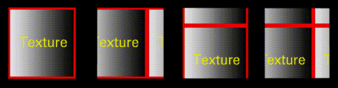

Figure 3.7 Brick texture applied to sphere
A material can be used in one or more domains; each render domain has a different set of attributes that can be specified to take advantage of that domain. This chapter describes the attributes for the GL Shade and the Render domains. (Attributes for the various game domains is described in more detail in the appropriate Game Express manuals.)
You can specify Shader and Texture map parameters for the GL Shade domain. The preferences you specify here are used as defaults if you do not make any changes to the material locally.
GL Shade Domain
Setting GL Shade Preferences
To set GL Shade Preferences, (CLICK-L) on the GL Shade button, then (CLICK-L) on the Prefs button. The GL Shade defaults menu appears:
Map Directory
This is the default directory for texture maps.
After specifying a map directory, (CLICK-L) on one of the buttons at the bottom of the dialog box:
Shader Attributes (GL Shade)
To edit Shader attributes, (CLICK-L) on the Shader icon in the Material Parameters section of the Attributes Editor menu. The GL Shade shader attributes appear in the Attributes section of the Attributes Editor window:
Diffuse Color
Specifies the diffuse color of the object. Diffuse color is the color reflected by the object equally in all directions. (CLICK-L) on the field to reveal a Select Color dialog.
Shininess
This parameter controls the prominence of the specular highlight. A higher value produces a more prominent highlight, and a "shinier" look.
Specular Color
Sets the color of the specular highlight.
Emission Color
This color defines the darkest possible color of the surface.
Smooth Shade?
Selects the interpolation method used to render. Smooth shade creates a smoother transition between neighboring faces, giving the object an overall smoother appearance.
Outline Faces
Draws outlines around each face of the object being rendered.
Texture Parameters (GL Shade)
Texture parameters control texture maps you wish to include in your materials.
Texture Map
A texture map is an image which is projected onto an object. (CLICK-L) on this field to select an image map from among files in the default map directory.
The Render domain is N·World's native render domain. N-Render, N·World's native renderer, includes expanded support for shader attributes like ray tracing, as well as more powerful image-mapping techniques.
Render Domain (N-Render)
Setting Render Domain Preferences
To set your N-Render defaults, (CLICK-L) on the Render domain button, then (CLICK-L) on the Prefs button. The following dialog box is displayed:
Output Directory
The directory into which rendered image files are written. Intermediate render files are kept in this directory, which N-Render uses to build the final rendered image.
Output Name
The prefix for the render file.
Map Directory
The default directory for map image files. When specifying a map file for a texture, bump, or other type of map, this is the directory that is specified if you have not loaded a map from any other directory in this session.
Output Window
The destination window into which the current scene is rendered.
Render Width
The width of the rendered image (in pixels).
Render Height
The height of the rendered image (in pixels).
Render Gamma
The overall gamma correction value to be applied to the rendered scene. A lower value will produce a darker image. The default gamma value for the SGI is 1.0.
Output Format
The file format of the rendered image. (CLICK-L) on this field and choose a format from the pop-up menu:
Background
Specifies what to do with the image currently in the Output Window:
Anti-Alias
Determines how much of the surrounding area to use when computing the color of each pixel. Higher values mean images are rendered more quickly at the expense of image quality.
Ray Depth
Determines how many ray bounces to calculate. A value of 1 results in essentially a scan line render (a single bounce). Higher values give a more pronounced ray tracing effect.
Ray Power
The minimum power at which a ray will bounce. A ray loses some value power each time it bounces or passes through a semi-transparent object. A lower value will allow the ray to bounce more times.
Pixel Filter
Determines the method by which anti-aliasing is performed. There are five algorithms to choose from. Box, Tent, Tentc, and Gaussian produce increasingly anti-aliased images. Anti-flicker is a special filter that can be used for broadcast images.
Compute Matte?
Specifies whether a matte is computed for the output image. If you select Yes, the resulting image will be a four-channel (RGBA) image, with the appropriate matte in the alpha channel. If No, the resulting images will be a three-channel (RGB) image.
Dither Image?
Dithers the image to smooth the banding that can sometimes occur in a rendered frame.
Enable Shadows?
Specifies whether shadows should be calculated when rendering the image.
Show Render Time?
Specifies whether the time to render the last frame is displayed in the N·World UNIX shell.
Display Render?
Specifies whether the rendered image is actually displayed in the destination Output Window.
Save Render?
Specifies whether files are saved to the Output Directory specified above.
Fog Color
The default fog color used with the fog render effects.
Shadow Smoothness
Specifies a factor for "smoothing" the generated shadow. Higher values smooth the shadow more, but take more time to render.
Shadow Map Min and Shadow Map Max
These are the default minimum and maximum values for the size of any shadow map that is created; these values can be overwritten by specifying other values for a particular light. See the section "Shadowing," on page 4-20 for more information.
Saving Preferences
After specifying your render defaults, (CLICK-L) on one of the buttons at the bottom of the dialog box:
Shader Attributes (N-Render)
Shading Model
The are five basic shading models which can be used in N-Render:
Each model uses a subset of the render attributes described below to achieve its "look." The shader attributes that can be specified with each shading model are described in Table 3.1:
| Attribute | Flat | Lambert | Phong | Blinn | Cook |
|---|---|---|---|---|---|
| Raytrace? | · | · | · | · | · |
| Reflectance | · | · | · | · | · |
| Refractance | · | · | · | · | · |
| Index | · | · | · | · | · |
| Color | · | · | · | · | · |
| Color Opacity | · | · | · | · | · |
| Specular Color | · | · | · | ||
| Specular Exponent | · | · | · | ||
| Ambient Gel | · | · | · | · | |
| Directional Gel | · | · | · | · | |
| Fresnel | · | ||||
| Visibility | · | · | · | · | · |
| Highlight Opacity | · | · | · | ||
| Smooth Shade? | · | · | · | · | · |
| Facing Control | · | · | · | · | · |
| Light Group | · | · | · | · | · |
Ray Trace
Toggles ray tracing on and off. Ray tracing is the more complex of the two basic models for rendering scenes. Using ray tracing, rays from light sources can be "split" upon encountering an object, with some portion of the ray traveling through the object (if it is not completely opaque) and some portion bouncing off the object in another direction, possibly to interact with another object.
Color
Sets the diffuse (surface) color of an object rendered with this material.
Color Opacity
Sets the opacity of the color of an object rendered with this material. Reducing the color opacity typically produces a glassy appearance on the object to which it is applied. (You might, for example, modify the opacity of a bottle or the lens in a pair of glasses.)
Specular Color
Sets the color of the specular highlight.
Specular Exponent
Determines the size of the specular highlight on an object rendered with this material. The exponent works differently depending on the shading model selected:
Ambient Gel
This color filter (specified with RGB values) affects only ambient lights. The effect is similar to gels on directional lights. (Imagine putting the ambient light inside a colored sphere, so that any object affected by the light was modified.)
Directional Gel
Similar to Ambient Gel above, except that the filter affects only non-ambient light sources (infinite, point, and spot lights).
Fresnel
The Fresnel color is available only with the Cook shading model; it sets the color for the perimeter of the area defined by the specular highlight, creating a two-tone specular highlight.
Visibility
Sets the visibility for an object rendered with this material. For example, if you wanted to make an object gradually disappear, you could write a script in N-Dynamics that animated the visibility for this material from 1 down to 0. Specify the attribute using a value between 0 and 1, with 0 being completely invisible.
Highlight Opacity
The relative opacity of the specular highlight. A value of 1.0 makes the specular highlight completely visible, a value 0.0 makes it invisible.
Facing Control
Specifies which faces are rendered. For example, you may have cases where you want back faces rendered (e.g., for a wine glass), but other where you don't (e.g., a house).
Smooth Shade?
Selects the interpolation method used to render a scene. Smooth shade creates a smoother transition between neighboring faces, giving the object rendered with this material an overall smoother appearance.
Light Group
Select the light group used to be used with this material. (CLICK-M) on this field to open the Light Group editor. For details on using the light group editor, see "Lights," on page 4-1.
Mapping Attributes (N-Render)
Image mapping is a powerful technique in computer graphics for defining the rendered appearance of a three-dimensional object. In image mapping, a two-dimensional image is used to determine the color, opacity, bumpiness, or reflectance of the surface of a three-dimensional object.
N-Render supports five different types of maps, all of which are discussed later in this chapter:
Sample Maps Directory
A number of sample maps are stored in the following directory:
Visualizing the Mapping Process
To help you visualize the mapping process, imagine wrapping a Christmas present in a square sheet of paper.
You can map a 2D image with no distortion, but only to the three following geometric primitives:
Texture Mapping
With texture mapping, you are laminating color onto the surface of an object. With texture mapping alone, for instance, you could apply an image of wood grain or a brick pattern to all the faces of an object, thereby creating the illusion that it was made of wood or brick:
Opacity Mapping
With opacity mapping, you are laminating the pattern of opacity. You could use opacity mapping by itself to make parts of the object completely transparent (so the object appeared to have a hole in it) or to give an object some level of transparency (like frosted glass).
Bump Mapping
Bump mapping produces the appearance of an embossed surface, creating the illusion that the object's surface has fine-scale geometric detail, complete with highlights and shadowed edges. As a simple example, imagine that you have created a sphere in N-Geometry, but your ultimate goal is to render a golf ball. Rather than rebuild the object with the fine-scale geometry required to produce the hundreds of dimples on a golf ball's surface, you could create a bump map of dimples and map it onto the surface of the sphere.
Texture maps and bump maps automatically have opacity maps associated with them (based on the alpha channel of the mapped image-see the section "Use Map Alpha," on page 3-29).
Reflection Mapping
Reflection mapping, used to simulate highly polished surfaces, is especially effective in conveying the impression of a metallic surface such as chrome or gold. This technique establishes (on a pixel-by-pixel basis) what the eye should see reflected in the surface of an object.
Refraction Mapping
Refraction mapping, on the other hand, creates the illusion of what the inside of an object to which the mapper is applied should look like.
N-Render Image Mapping Parameters
N-Render mapping parameters are divided into five major areas. Each of the five types of image map supported by N-Render has its own "slot" in the Material Parameters section-(CLICK-L) on a slot to select it.
Table 3.2 shows which parameters can be specified for each type of map; each of these attributes is described in more detail on the pages that follow.
| Characteristic | Texture | Opacity | Bump | Reflection | Refraction |
|---|---|---|---|---|---|
| Map | · | · | · | · | · |
| Opacity | · | · | · | · | · |
| Brightness | · | · | · | · | · |
| Depth | · | ||||
| UV Scale | · | · | · | · | · |
| UV Offset | · | · | · | ||
| UV Rotate | · | · | · | ||
| Clip Texture? | · | · | · | · | · |
| Shader | · | · | · | · | · |
| Shader Sample Limit | · | · | · | · | · |
| Clipping Range? | · | · | · | · | · |
| Use Alpha? | · | · | · | · | · |
| Boundary | · | · | · | · | · |
| Color Scale | · | · | · | · | |
| Background Scale | · | · | |||
| Index | · |
Map
Specifies the image to be mapped onto the surface of the object.
Opacity
Defines how much of the applied map to be used (expressed as a percentage) versus the diffuse color.
Brightness
Modifies the relative brightness of the applied map. The default value is 1.0.
UV Scale
The UV scale for a map determines how an image is repetitively mapped onto an object or face part. You can raise either U or V to a value greater than 1 to apply the map to the same object more than once.
UV Offset
Specifies the offset (from the mapper's origin) at which to begin applying the map.

Figure 3.15 shows how different offset values affect mapping of an image onto a surface; in this case, a texture applied through a planar mapper to a lamina:
Figure 3.16 Left, unmodified UV Offset, right, with a negative U value of .3
UV Rotate
Rotates the map by the specified number of degrees before applying it to the object or face part.
The map is pinned at the 0,0 UV before it is rotated.
Figure 3.18 Left, original; right, rotated 25 degrees
Clip Texture?
Applies only a portion of the specified map file onto the object or face part. Note that the map is clipped:
Figure 3.19 Clip map applies only a subportion of the image file to the object or face part
Shader
Sets the sampling quality of texture mapping. The sampling quality depends on the shader selected. In order of increasing quality, the available shaders are:
(CLICK-L) on shader, then select the sampling method you want to use from the pop-up that appears.
Clipping Range
Creates a range (an area between two imaginary planes), and allows the application of maps only when the object is between those two planes (measured in world units, with respect to the camera).
Use Map Alpha
Specifies whether the alpha channel for a map should be used when determining which part of the map to apply to the surface of the object. This feature can be used to create a "decal" effect on an object-create a matte under the portion of the map that you want to use, then set this attribute to Yes.

Boundary
If you set the mapper value smaller than an object, or specify a UV Scale greater than 1, an image is recursively mapped on an object. In either case, you can specify the recurrence pattern to be used when mapping on an object. (In some cases, the map repeats; in others, it mirrors around an axis as indicated by the patterns shown below.)
Consider the application of the following texture map:
The map boundary can strongly affect the appearance of the rendered object. For example, consider the texture map in Figure 3.21 as applied through a planar mapper to the same lamina, using different Map Boundary techniques:
Color Scale
Texture, opacity, reflection, refraction
Background Color
Reflection, refraction
The calculated background color for any reflection or refraction mapping.
U and V values may be between the values of -10 and 10.
Figure 3.25 Apparent effect of positive and negative bump depth values

Increasing the value in either direction makes the bumps more prominent, as shown in Figure 3.27.
The example in Figure 3.29 was created using the following map:
The map is inverted and applied to the object as shown in Figure 3.29:
Effects Attributes (N-Render)
These special effects attributes are only available with the Render domain.
Oblique Effects?
When rendering a semi-transparent object, such as a glass sphere, its edges typically become more opaque and light more diffuse at the outside of the object, since you are actually looking through a greater amount of opaque material at the outside of the object (the viewpoint along line A in the figure below). When viewing the object directly, you are looking through a thinner wall (the viewpoint along line B in the figure below).
(CLICK-L) on Yes to display the oblique effects attributes.
Diffuse
Specifies how light is diffused along the edges of an object when using oblique effects. Diffusion is specified using center, outside, and exponent values:
Opacity
Specifies the opacity of an object when using oblique effects. Opacity is specified using center, outside, and exponent values:
Specular
Specifies the characteristics of the specular highlight when using oblique effects. (For a realistic effect, these should be the same as the values defined for the opacity of the object.)
Higher values create a more opaque highlight.
Reflect
Determines how reflection maps are applied to an object when using oblique effects.
Refract
Determines how refraction maps are applied to an object when using oblique effects:
Use Fog?
The process used for making objects disappear into a "fog" as they move away from the camera.
Select Yes to use fog, then modify the parameters below to define its effects.
Fog Limit
These two values define where the fog effect begins, and where it increases to 100% opacity. The distances are expressed in units in which the scene is rendered, measured from the camera's point of view.
Use Default Color?
If set to Yes, the default fog color specified using the Render Defaults menu is used. If set to No, a color edit box appears; (CLICK-L) on the color box to edit the color of the fog.
Copyright © 1996, Nichimen Graphics Corporation. All rights reserved.